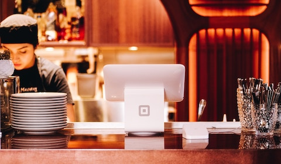

Jennifer Soft
Founder and CEO
Vivamus cursus leo nec sem feugiat sagittis. Duis ut feugiat odio, sit amet accumsan odio.
At Steak House, we believe a great meal is more than just perfectly grilled steak—it’s about making every guest feel like family. Our team takes pride in warm, attentive service, ensuring every visit is as memorable as the flavors on your plate. From hand-selected cuts to a welcoming atmosphere, we’re here to serve you with genuine care and a smile.
Founder and CEO
Vivamus cursus leo nec sem feugiat sagittis. Duis ut feugiat odio, sit amet accumsan odio.
Executive Chef
Praesent non vulputate elit. Orci varius natoque et magnis dis parturient, nascetur ridiculus mus.

Kitchen Manager
Aenean sapien sem, ultricies sed vulputate et, auctor vel mauris. Integer sit amet diam eget est facilisis lacinia vitae.

Culinary Director
Praesent non vulputate elit. Orci varius natoque penatibus et magnis montes, nascetur ridiculus mus.
We use fresh organic veggies and rich organic lard to bring bold flavor and perfect sear to every steak, keeping our dishes wholesome and unforgettable.
We use sustainable equipment that conserves energy and reduces waste, ensuring every meal is crafted with care for both flavor and the planet.
We serve handcrafted drinks made with fresh, natural ingredients, offering bold flavors that perfectly complement every meal.

Our steakhouse began as a small family-run eatery, built on a love for good food and warm hospitality. In the early days, we served just a few classic dishes, focusing on quality ingredients and traditional cooking methods. Over time, word spread, and our little spot became a local favorite. We stayed true to our roots, using organic produce, quality meats, and time-honored recipes. As we grew, we added more dishes and drinks, but our heart remained the same—serving honest, flavorful meals in a welcoming space. Today, we’re proud to share our passion with every guest who walks through our doors.